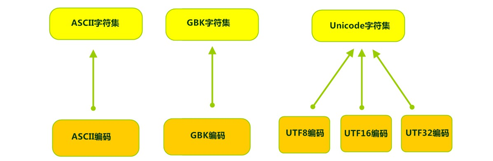
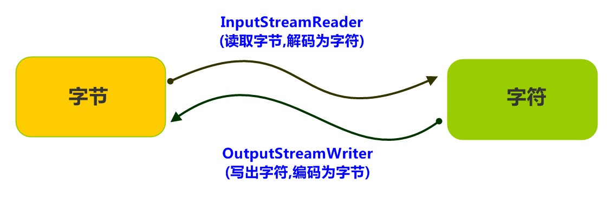

第12章 File类与IO流
主要内容
- File类
- 字节流
- 字符流
- 文件流
- 缓冲流
- 转换流
- 数据流
- 对象流
- 打印流
- 标准输入输出流
教学目标
使用File类对象表示文件或目录
能够辨别相对路径和绝对路径
能够说出IO流的分类和功能
能够使用字节输出流写出数据到文件
能够使用字节输入流读取数据到程序
能够理解读取数据read(byte[])方法的原理
能够使用字节流完成文件的复制
能够使用FileWirter写数据到文件
能够说出FileWriter中关闭和刷新方法的区别
能够使用FileWriter写数据的5个方法
能够使用FileWriter写数据实现换行和追加写
能够使用FileReader读数据
能够使用FileReader读数据一次一个字符数组
能够使用字节缓冲流读取数据到程序
能够使用字节缓冲流写出数据到文件
能够明确字符缓冲流的作用和基本用法
能够使用缓冲流的特殊功能
能够阐述编码表的意义
能够使用转换流读取指定编码的文本文件
能够使用转换流写入指定编码的文本文件
能够说出打印流的特点
能够使用序列化流写出对象到文件
能够使用反序列化流读取文件到程序中
第十二章 File类与IO流
12.1 java.io.File类
12.1.1 概述
File类是java.io包下代表与平台无关的文件和目录，也就是说如果希望在程序中操作文件和目录都可以通过File类来完成，File类能新建、删除、重命名文件和目录。
在API中File的解释是文件和目录路径名的抽象表示形式，即File类是文件或目录的路径，而不是文件本身，因此File类不能直接访问文件内容本身，如果需要访问文件内容本身，则需要使用输入/输出流。
File类代表磁盘或网络中某个文件或目录的路径名称，如：/atguigu/javase/io/佟刚.jpg
但不能直接通过File对象读取和写入数据，如果要操作数据，需要IO流。File对象好比是到水库的“路线地址”，要“存取”里面的水到你“家里”，需要“管道”。
12.1.2 构造方法
public File(String pathname)：通过将给定的路径名字符串转换为抽象路径名来创建新的 File实例。public File(String parent, String child)：从父路径名字符串和子路径名字符串创建新的 File实例。public File(File parent, String child)：从父抽象路径名和子路径名字符串创建新的 File实例。
- 构造举例，代码如下：
x// 文件路径名String pathname = "D:\\aaa.txt";File file1 = new File(pathname); // 文件路径名String pathname2 = "D:\\aaa\\bbb.txt";File file2 = new File(pathname2); // 通过父路径和子路径字符串 String parent = "d:\\aaa"; String child = "bbb.txt"; File file3 = new File(parent, child);// 通过父级File对象和子路径字符串File parentDir = new File("d:\\aaa");String child = "bbb.txt";File file4 = new File(parentDir, child);小贴士：
- 一个File对象代表硬盘中实际存在的一个文件或者目录。
- 无论该路径下是否存在文件或者目录，都不影响File对象的创建。
12.1.3 常用方法（了解）
获取文件和目录基本信息的方法
public String getName()：返回由此File表示的文件或目录的名称。public long length()：返回由此File表示的文件的长度。public String getPath()：将此File转换为路径名字符串。public long lastModified()：返回File对象对应的文件或目录的最后修改时间（毫秒值）方法演示，代码如下：
xxxxxxxxxximport java.io.File;import java.time.Instant;import java.time.LocalDateTime;import java.time.ZoneId;public class TestFile {public static void main(String[] args) {File f = new File("d:/aaa/bbb.txt");System.out.println("文件构造路径:"+f.getPath());System.out.println("文件名称:"+f.getName());System.out.println("文件长度:"+f.length()+"字节");System.out.println("文件最后修改时间：" + LocalDateTime.ofInstant(Instant.ofEpochMilli(f.lastModified()),ZoneId.of("Asia/Shanghai")));File f2 = new File("d:/aaa");System.out.println("目录构造路径:"+f2.getPath());System.out.println("目录名称:"+f2.getName());System.out.println("目录长度:"+f2.length()+"字节");System.out.println("文件最后修改时间：" + LocalDateTime.ofInstant(Instant.ofEpochMilli(f.lastModified()),ZoneId.of("Asia/Shanghai")));}}输出结果：文件构造路径:d:\aaa\bbb.java文件名称:bbb.java文件长度:636字节文件最后修改时间：2019-07-23T22:01:32.065目录构造路径:d:\aaa目录名称:aaa目录长度:4096字节文件最后修改时间：2019-07-23T22:01:32.065
API中说明：length()，表示文件的长度。但是File对象表示目录，则返回值未指定。
各种路径问题
public String getPath()：将此File转换为路径名字符串。public String getAbsolutePath()：返回此File的绝对路径名字符串。String getCanonicalPath()：返回此File对象所对应的规范路径名。
File类可以使用文件路径字符串来创建File实例，该文件路径字符串既可以是绝对路径，也可以是相对路径。
默认情况下，系统总是依据用户的工作路径来解释相对路径，这个路径由系统属性“user.dir”指定，通常也就是运行Java虚拟机时所作的路径。
- 绝对路径：从盘符开始的路径，这是一个完整的路径。
- 相对路径：相对于项目目录的路径，这是一个便捷的路径，开发中经常使用。
- 规范路径：所谓规范路径名，即对路径中的“..”等进行解析后的路径名
xxxxxxxxxxpublic void test1() throws IOException{File f1 = new File("d:\\atguigu\\javase\\HelloIO.java");System.out.println("文件/目录的名称：" + f1.getName());System.out.println("文件/目录的构造路径名：" + f1.getPath());System.out.println("文件/目录的绝对路径名：" + f1.getAbsolutePath());System.out.println("文件/目录的规范路径名：" + f1.getCanonicalPath());System.out.println("文件/目录的父目录名：" + f1.getParent());}public void test2() throws IOException{File f2 = new File("HelloIO.java");System.out.println("user.dir =" + System.getProperty("user.dir"));System.out.println("文件/目录的名称：" + f2.getName());System.out.println("文件/目录的构造路径名：" + f2.getPath());System.out.println("文件/目录的绝对路径名：" + f2.getAbsolutePath());System.out.println("文件/目录的规范路径名：" + f2.getCanonicalPath());System.out.println("文件/目录的父目录名：" + f2.getParent());}public void test3() throws IOException{File f3 = new File("../../HelloIO.java");System.out.println("user.dir =" + System.getProperty("user.dir"));System.out.println("文件/目录的名称：" + f3.getName());System.out.println("文件/目录的构造路径名：" + f3.getPath());System.out.println("文件/目录的绝对路径名：" + f3.getAbsolutePath());System.out.println("文件/目录的规范路径名：" + f3.getCanonicalPath());System.out.println("文件/目录的父目录名：" + f3.getParent());}- window的路径分隔符使用“\”，而Java程序中的“\”表示转义字符，所以在Windows中表示路径，需要用“\”。或者直接使用“/”也可以，Java程序支持将“/”当成平台无关的路径分隔符。或者直接使用File.separator常量值表示。
- 把构造File对象指定的文件或目录的路径名，称为构造路径，它可以是绝对路径，也可以是相对路径
- 当构造路径是绝对路径时，那么getPath和getAbsolutePath结果一样
- 当构造路径是相对路径时，那么getAbsolutePath的路径 = user.dir的路径 + 构造路径
- 当路径中不包含".."和"/开头"等形式的路径，那么规范路径和绝对路径一样，否则会将..等进行解析。路径中如果出现“..”表示上一级目录，路径名如果以“/”开头，表示从“根目录”下开始导航。
判断功能的方法
public boolean exists()：此File表示的文件或目录是否实际存在。public boolean isDirectory()：此File表示的是否为目录。public boolean isFile()：此File表示的是否为文件。
方法演示，代码如下：
xxxxxxxxxx public class FileIs { public static void main(String[] args) { File f = new File("d:\\aaa\\bbb.java"); File f2 = new File("d:\\aaa"); // 判断是否存在 System.out.println("d:\\aaa\\bbb.java 是否存在:"+f.exists()); System.out.println("d:\\aaa 是否存在:"+f2.exists()); // 判断是文件还是目录 System.out.println("d:\\aaa 文件?:"+f2.isFile()); System.out.println("d:\\aaa 目录?:"+f2.isDirectory()); } } 输出结果： d:\aaa\bbb.java 是否存在:true d:\aaa 是否存在:true d:\aaa 文件?:false d:\aaa 目录?:true如果文件或目录存在，那么exists()、isFile()和isDirectory()都是返回true
创建删除功能的方法
public boolean createNewFile()：当且仅当具有该名称的文件尚不存在时，创建一个新的空文件。public boolean delete()：删除由此File表示的文件或目录。 只能删除空目录。public boolean mkdir()：创建由此File表示的目录。public boolean mkdirs()：创建由此File表示的目录，包括任何必需但不存在的父目录。
方法演示，代码如下：
xxxxxxxxxxpublic class FileCreateDelete {public static void main(String[] args) throws IOException {// 文件的创建File f = new File("aaa.txt");System.out.println("是否存在:"+f.exists()); // falseSystem.out.println("是否创建:"+f.createNewFile()); // trueSystem.out.println("是否存在:"+f.exists()); // true// 目录的创建File f2= new File("newDir");System.out.println("是否存在:"+f2.exists());// falseSystem.out.println("是否创建:"+f2.mkdir()); // trueSystem.out.println("是否存在:"+f2.exists());// true// 创建多级目录File f3= new File("newDira\\newDirb");System.out.println(f3.mkdir());// falseFile f4= new File("newDira\\newDirb");System.out.println(f4.mkdirs());// true// 文件的删除System.out.println(f.delete());// true// 目录的删除System.out.println(f2.delete());// trueSystem.out.println(f4.delete());// false}}API中说明：delete方法，如果此File表示目录，则目录必须为空才能删除。
14.1.4 目录操作
public String[] list()：返回一个String数组，表示该File目录中的所有子文件或目录。
public File[] listFiles()：返回一个File数组，表示该File目录中的所有的子文件或目录。public File[] listFiles(FileFilter filter)：返回所有满足指定过滤器的文件和目录。如果给定 filter 为 null，则接受所有路径名。否则，当且仅当在路径名上调用过滤器的 FileFilter.accept(java.io.File) 方法返回 true 时，该路径名才满足过滤器。如果当前File对象不表示一个目录，或者发生 I/O 错误，则返回 null。
以上方法常用与递归操作：
（1）递归打印多级目录
分析：多级目录的打印。遍历之前，无从知道到底有多少级目录，所以我们可以使用递归实现。
代码实现：
xxxxxxxxxx public void test3() { File dir = new File("d:/atguigu"); listSubFiles(dir); } public void listSubFiles(File dir) { if (dir != null && dir.isDirectory()) { File[] listFiles = dir.listFiles(); if (listFiles != null) { for (File sub : listFiles) { listSubFiles(sub);//递归调用 } } } System.out.println(dir); }（2）递归打印某目录下（包括子目录）中所有满足条件的文件
示例代码：列出"D:/atguigu"下所有".java"文件
xxxxxxxxxx public void test5() { File dir = new File("D:/atguigu"); listByFileFilter(dir); } public void listByFileFilter(File file) { if (file != null && file.isDirectory()) { File[] listFiles = file.listFiles(new FilenameFilter() { public boolean accept(File dir, String name) { return name.endsWith(".java") || new File(dir,name).isDirectory(); } }); if (listFiles != null) { for (File sub : listFiles) { if(sub.isFile()){ System.out.println(sub); } listByFileFilter(sub); } } } }（3）递归求目录总大小
xxxxxxxxxx public void test4() { File dir = new File("D:/atguigu"); long length = getLength(dir); System.out.println("大小：" + length); } public long getLength(File dir){ if (dir != null && dir.isDirectory()) { File[] listFiles = dir.listFiles(); if(listFiles!=null){ long sum = 0; for (File sub : listFiles) { sum += getLength(sub); } return sum; } }else if(dir != null && dir.isFile()){ return dir.length(); } return 0; }（4）递归删除非空目录
如果目录非空，连同目录下的文件和文件夹一起删除
@Test
public void test6() {
File dir = new File("D:/atguigu/javase");
forceDeleteDir(dir);
}
public void forceDeleteDir(File dir) {
if (dir != null && dir.isDirectory()) {
File[] listFiles = dir.listFiles();
if(listFiles!=null){
for (File sub : listFiles) {
forceDeleteDir(sub);
}
}
}
dir.delete();
}
12.2 IO概述
12.2.1 什么是IO
生活中，你肯定经历过这样的场景。当你编辑一个文本文件，忘记了ctrl+s ，可能文件就白白编辑了。当你电脑上插入一个U盘，可以把一个视频，拷贝到你的电脑硬盘里。那么数据都是在哪些设备上的呢？键盘、内存、硬盘、外接设备等等。
我们把这种数据的传输，可以看做是一种数据的流动，按照流动的方向，以内存为基准，分为输入input 和输出output ，即流向内存是输入流，流出内存的输出流。
Java中I/O操作主要是指使用java.io包下的内容，进行输入、输出操作。输入也叫做读取数据，输出也叫做作写出数据。
12.2.2 IO的分类
根据数据的流向分为：输入流和输出流。
输入流 ：把数据从
其他设备上读取到内存中的流。- 以InputStream,Reader结尾
输出流 ：把数据从
内存中写出到其他设备上的流。- 以OutputStream、Writer结尾
根据数据的类型分为：字节流和字符流。
字节流 ：以字节为单位，读写数据的流。
- 以InputStream和OutputStream结尾
字符流 ：以字符为单位，读写数据的流。
- 以Reader和Writer结尾
根据IO流的角色不同分为：节点流和处理流。
- 节点流：可以从或向一个特定的地方（节点）读写数据。如FileReader.
- 处理流：是对一个已存在的流进行连接和封装，通过所封装的流的功能调用实现数据读写。如BufferedReader.处理流的构造方法总是要带一个其他的流对象做参数。一个流对象经过其他流的多次包装，称为流的链接。
这种设计是装饰模式（Decorator Pattern）也称为包装模式（Wrapper Pattern），其使用一种对客户端透明的方式来动态地扩展对象的功能，它是通过继承扩展功能的替代方案之一。在现实生活中你也有很多装饰者的例子，例如：人需要各种各样的衣着，不管你穿着怎样，但是，对于你个人本质来说是不变的，充其量只是在外面加上了一些装饰，有，“遮羞的”、“保暖的”、“好看的”、“防雨的”....
常用的节点流：
- 文 件 FileInputStream FileOutputStrean FileReader FileWriter 文件进行处理的节点流。
- 字符串 StringReader StringWriter 对字符串进行处理的节点流。
- 数 组 ByteArrayInputStream ByteArrayOutputStream CharArrayReader CharArrayWriter 对数组进行处理的节点流（对应的不再是文件，而是内存中的一个数组）。
- 管 道 PipedInputStream、PipedOutputStream、PipedReader、PipedWriter对管道进行处理的节点流。
常用处理流：
- 缓冲流：BufferedInputStream、BufferedOutputStream、BufferedReader、BufferedWriter---增加缓冲功能，避免频繁读写硬盘。
- 转换流：InputStreamReader、OutputStreamReader---实现字节流和字符流之间的转换。
- 数据流：DataInputStream、DataOutputStream -提供读写Java基础数据类型功能
- 对象流：ObjectInputStream、ObjectOutputStream--提供直接读写Java对象功能
12.2.3 IO中的基类
| 输入流 | 输出流 | |
|---|---|---|
| 字节流 | 字节输入流InputStream | 字节输出流OutputStream |
| 字符流 | 字符输入流Reader | 字符输出流Writer |
12.3 字节流
一切文件数据(文本、图片、视频等)在存储时，都是以二进制数字的形式保存，都一个一个的字节，那么传输时一样如此。所以，字节流可以传输任意文件数据。在操作流的时候，我们要时刻明确，无论使用什么样的流对象，底层传输的始终为二进制数据。
12.3.1 字节输出流【OutputStream】
java.io.OutputStream抽象类是表示字节输出流的所有类的超类，将指定的字节信息写出到目的地。它定义了字节输出流的基本共性功能方法。
public void close()：关闭此输出流并释放与此流相关联的任何系统资源。public void flush()：刷新此输出流并强制任何缓冲的输出字节被写出。public void write(byte[] b)：将 b.length字节从指定的字节数组写入此输出流。public void write(byte[] b, int off, int len)：从指定的字节数组写入 len字节，从偏移量 off开始输出到此输出流。public abstract void write(int b)：将指定的字节输出流。
小贴士：
close方法，当完成流的操作时，必须调用此方法，释放系统资源。
14.2.2 FileOutputStream类
OutputStream有很多子类，我们从最简单的一个子类开始。
java.io.FileOutputStream类是文件输出流，用于将数据写出到文件。
构造方法
public FileOutputStream(File file)：创建文件输出流以写入由指定的 File对象表示的文件。public FileOutputStream(String name)： 创建文件输出流以指定的名称写入文件。
当你创建一个流对象时，必须传入一个文件路径。该路径下，如果没有这个文件，会创建该文件。如果有这个文件，会清空这个文件的数据。
- 构造举例，代码如下：
public class FileOutputStreamConstructor throws IOException { public static void main(String[] args) { // 使用File对象创建流对象 File file = new File("a.txt"); FileOutputStream fos = new FileOutputStream(file); // 使用文件名称创建流对象 FileOutputStream fos = new FileOutputStream("b.txt"); } }写出字节数据
写出字节：
write(int b)方法，每次可以写出一个字节数据，代码使用演示：public class FOSWrite { public static void main(String[] args) throws IOException { // 使用文件名称创建流对象 FileOutputStream fos = new FileOutputStream("fos.txt"); // 写出数据 fos.write(97); // 写出第1个字节 fos.write(98); // 写出第2个字节 fos.write(99); // 写出第3个字节 // 关闭资源 fos.close(); } } 输出结果： abc小贴士：
- 虽然参数为int类型四个字节，但是只会保留一个字节的信息写出。
- 流操作完毕后，必须释放系统资源，调用close方法，千万记得。
写出字节数组：
write(byte[] b)，每次可以写出数组中的数据，代码使用演示：public class FOSWrite { public static void main(String[] args) throws IOException { // 使用文件名称创建流对象 FileOutputStream fos = new FileOutputStream("fos.txt"); // 字符串转换为字节数组 byte[] b = "尚硅谷".getBytes(); // 写出字节数组数据 fos.write(b); // 关闭资源 fos.close(); } } 输出结果： 尚硅谷写出指定长度字节数组：
write(byte[] b, int off, int len),每次写出从off索引开始，len个字节，代码使用演示：public class FOSWrite { public static void main(String[] args) throws IOException { // 使用文件名称创建流对象 FileOutputStream fos = new FileOutputStream("fos.txt"); // 字符串转换为字节数组 byte[] b = "abcde".getBytes(); // 写出从索引2开始，2个字节。索引2是c，两个字节，也就是cd。 fos.write(b,2,2); // 关闭资源 fos.close(); } } 输出结果： cd数据追加续写
经过以上的演示，每次程序运行，创建输出流对象，都会清空目标文件中的数据。如何保留目标文件中数据，还能继续添加新数据呢？
public FileOutputStream(File file, boolean append)： 创建文件输出流以写入由指定的 File对象表示的文件。public FileOutputStream(String name, boolean append)： 创建文件输出流以指定的名称写入文件。
这两个构造方法，参数中都需要传入一个boolean类型的值，
true表示追加数据，false表示清空原有数据。这样创建的输出流对象，就可以指定是否追加续写了，代码使用演示：public class FOSWrite { public static void main(String[] args) throws IOException { // 使用文件名称创建流对象 FileOutputStream fos = new FileOutputStream("fos.txt"，true); // 字符串转换为字节数组 byte[] b = "abcde".getBytes(); // 写出从索引2开始，2个字节。索引2是c，两个字节，也就是cd。 fos.write(b); // 关闭资源 fos.close(); } } 文件操作前：cd 文件操作后：cdabcde写出换行
Windows系统里，换行符号是
\r\n。把以指定是否追加续写了，代码使用演示：
public class FOSWrite { public static void main(String[] args) throws IOException { // 使用文件名称创建流对象 FileOutputStream fos = new FileOutputStream("fos.txt"); // 定义字节数组 byte[] words = {97,98,99,100,101}; // 遍历数组 for (int i = 0; i < words.length; i++) { // 写出一个字节 fos.write(words[i]); // 写出一个换行, 换行符号转成数组写出 fos.write("\r\n".getBytes()); } // 关闭资源 fos.close(); } } 输出结果： a b c d e回车符
\r和换行符\n：- 回车符：回到一行的开头（return）。
- 换行符：下一行（newline）。
系统中的换行：
- Windows系统里，每行结尾是
回车+换行，即\r\n； - Unix系统里，每行结尾只有
换行，即\n； - Mac系统里，每行结尾是
回车，即\r。从 Mac OS X开始与Linux统一。
- Windows系统里，每行结尾是
14.2.3 字节输入流【InputStream】
java.io.InputStream抽象类是表示字节输入流的所有类的超类，可以读取字节信息到内存中。它定义了字节输入流的基本共性功能方法。
public void close()：关闭此输入流并释放与此流相关联的任何系统资源。public abstract int read()： 从输入流读取数据的下一个字节。public int read(byte[] b)： 从输入流中读取一些字节数，并将它们存储到字节数组 b中 。
小贴士：
close方法，当完成流的操作时，必须调用此方法，释放系统资源。
14.2.4 FileInputStream类
java.io.FileInputStream类是文件输入流，从文件中读取字节。
构造方法
FileInputStream(File file)： 通过打开与实际文件的连接来创建一个 FileInputStream ，该文件由文件系统中的 File对象 file命名。FileInputStream(String name)： 通过打开与实际文件的连接来创建一个 FileInputStream ，该文件由文件系统中的路径名 name命名。
当你创建一个流对象时，必须传入一个文件路径。该路径下，如果没有该文件,会抛出
FileNotFoundException。- 构造举例，代码如下：
public class FileInputStreamConstructor throws IOException{ public static void main(String[] args) { // 使用File对象创建流对象 File file = new File("a.txt"); FileInputStream fis = new FileInputStream(file); // 使用文件名称创建流对象 FileInputStream fis = new FileInputStream("b.txt"); } }读取字节数据
读取字节：
read方法，每次可以读取一个字节的数据，提升为int类型，读取到文件末尾，返回-1，代码使用演示：public class FISRead { public static void main(String[] args) throws IOException{ // 使用文件名称创建流对象 FileInputStream fis = new FileInputStream("read.txt"); // 读取数据，返回一个字节 int read = fis.read(); System.out.println((char) read); read = fis.read(); System.out.println((char) read); read = fis.read(); System.out.println((char) read); read = fis.read(); System.out.println((char) read); read = fis.read(); System.out.println((char) read); // 读取到末尾,返回-1 read = fis.read(); System.out.println( read); // 关闭资源 fis.close(); } } 输出结果： a b c d e -1循环改进读取方式，代码使用演示：
public class FISRead { public static void main(String[] args) throws IOException{ // 使用文件名称创建流对象 FileInputStream fis = new FileInputStream("read.txt"); // 定义变量，保存数据 int b ； // 循环读取 while ((b = fis.read())!=-1) { System.out.println((char)b); } // 关闭资源 fis.close(); } } 输出结果： a b c d e小贴士：
- 虽然读取了一个字节，但是会自动提升为int类型。
- 流操作完毕后，必须释放系统资源，调用close方法，千万记得。
使用字节数组读取：
read(byte[] b)，每次读取b的长度个字节到数组中，返回读取到的有效字节个数，读取到末尾时，返回-1，代码使用演示：public class FISRead { public static void main(String[] args) throws IOException{ // 使用文件名称创建流对象. FileInputStream fis = new FileInputStream("read.txt"); // 文件中为abcde // 定义变量，作为有效个数 int len ； // 定义字节数组，作为装字节数据的容器 byte[] b = new byte[2]; // 循环读取 while (( len= fis.read(b))!=-1) { // 每次读取后,把数组变成字符串打印 System.out.println(new String(b)); } // 关闭资源 fis.close(); } } 输出结果： ab cd ed错误数据
d，是由于最后一次读取时，只读取一个字节e，数组中，上次读取的数据没有被完全替换，所以要通过len，获取有效的字节，代码使用演示：public class FISRead { public static void main(String[] args) throws IOException{ // 使用文件名称创建流对象. FileInputStream fis = new FileInputStream("read.txt"); // 文件中为abcde // 定义变量，作为有效个数 int len ； // 定义字节数组，作为装字节数据的容器 byte[] b = new byte[2]; // 循环读取 while (( len= fis.read(b))!=-1) { // 每次读取后,把数组的有效字节部分，变成字符串打印 System.out.println(new String(b，0，len));// len 每次读取的有效字节个数 } // 关闭资源 fis.close(); } } 输出结果： ab cd e小贴士：
使用数组读取，每次读取多个字节，减少了系统间的IO操作次数，从而提高了读写的效率，建议开发中使用。
14.2.5 字节流练习：图片复制

复制图片文件，代码使用演示：
public class Copy {
public static void main(String[] args) throws IOException {
// 1.创建流对象
// 1.1 指定数据源
FileInputStream fis = new FileInputStream("D:\\test.jpg");
// 1.2 指定目的地
FileOutputStream fos = new FileOutputStream("test_copy.jpg");
// 2.读写数据
// 2.1 定义数组
byte[] b = new byte[1024];
// 2.2 定义长度
int len;
// 2.3 循环读取
while ((len = fis.read(b))!=-1) {
// 2.4 写出数据
fos.write(b, 0 , len);
}
// 3.关闭资源
fos.close();
fis.close();
}
}
小贴士：
流的关闭原则：先开后关，后开先关。
12.4 字符流
当使用字节流读取文本文件时，可能会有一个小问题。就是遇到中文字符时，可能不会显示完整的字符，那是因为一个中文字符可能占用多个字节存储。所以Java提供一些字符流类，以字符为单位读写数据，专门用于处理文本文件。
12.4.1 字符输入流【Reader】
java.io.Reader抽象类是表示用于读取字符流的所有类的超类，可以读取字符信息到内存中。它定义了字符输入流的基本共性功能方法。
public void close()：关闭此流并释放与此流相关联的任何系统资源。public int read()： 从输入流读取一个字符。public int read(char[] cbuf)： 从输入流中读取一些字符，并将它们存储到字符数组 cbuf中 。
12.4.2 FileReader类
java.io.FileReader类是读取字符文件的便利类。构造时使用系统默认的字符编码和默认字节缓冲区。
小贴士：
- 字符编码：字节与字符的对应规则。Windows系统的中文编码默认是GBK编码表。
eclipse中默认GBK，idea中默认UTF-8
- 字节缓冲区：一个字节数组，用来临时存储字节数据。
构造方法
FileReader(File file)： 创建一个新的 FileReader ，给定要读取的File对象。FileReader(String fileName)： 创建一个新的 FileReader ，给定要读取的文件的名称。
当你创建一个流对象时，必须传入一个文件路径。类似于FileInputStream 。
- 构造举例，代码如下：
public class FileReaderConstructor throws IOException{ public static void main(String[] args) { // 使用File对象创建流对象 File file = new File("a.txt"); FileReader fr = new FileReader(file); // 使用文件名称创建流对象 FileReader fr = new FileReader("b.txt"); } }读取字符数据
读取字符：
read方法，每次可以读取一个字符的数据，提升为int类型，读取到文件末尾，返回-1，循环读取，代码使用演示：public class FRRead { public static void main(String[] args) throws IOException { // 使用文件名称创建流对象 FileReader fr = new FileReader("read.txt"); // 定义变量，保存数据 int b ； // 循环读取 while ((b = fr.read())!=-1) { System.out.println((char)b); } // 关闭资源 fr.close(); } } 输出结果： 尚 硅 谷小贴士：虽然读取了一个字符，但是会自动提升为int类型。
使用字符数组读取：
read(char[] cbuf)，每次读取b的长度个字符到数组中，返回读取到的有效字符个数，读取到末尾时，返回-1，代码使用演示：public class FRRead { public static void main(String[] args) throws IOException { // 使用文件名称创建流对象 FileReader fr = new FileReader("read.txt"); // 定义变量，保存有效字符个数 int len ； // 定义字符数组，作为装字符数据的容器 char[] cbuf = new char[2]; // 循环读取 while ((len = fr.read(cbuf))!=-1) { System.out.println(new String(cbuf)); } // 关闭资源 fr.close(); } } 输出结果： 尚硅 谷硅获取有效的字符改进，代码使用演示：
public class FISRead { public static void main(String[] args) throws IOException { // 使用文件名称创建流对象 FileReader fr = new FileReader("read.txt"); // 定义变量，保存有效字符个数 int len ； // 定义字符数组，作为装字符数据的容器 char[] cbuf = new char[2]; // 循环读取 while ((len = fr.read(cbuf))!=-1) { System.out.println(new String(cbuf,0,len)); } // 关闭资源 fr.close(); } } 输出结果： 尚硅 谷
12.4.3 字符输出流【Writer】
java.io.Writer抽象类是表示用于写出字符流的所有类的超类，将指定的字符信息写出到目的地。它定义了字节输出流的基本共性功能方法。
void write(int c)写入单个字符。void write(char[] cbuf)写入字符数组。abstract void write(char[] cbuf, int off, int len)写入字符数组的某一部分,off数组的开始索引,len写的字符个数。void write(String str)写入字符串。void write(String str, int off, int len)写入字符串的某一部分,off字符串的开始索引,len写的字符个数。void flush()刷新该流的缓冲。void close()关闭此流，但要先刷新它。
12.4.4 FileWriter类
java.io.FileWriter类是写出字符到文件的便利类。构造时使用系统默认的字符编码和默认字节缓冲区。
构造方法
FileWriter(File file)： 创建一个新的 FileWriter，给定要读取的File对象。FileWriter(String fileName)： 创建一个新的 FileWriter，给定要读取的文件的名称。
当你创建一个流对象时，必须传入一个文件路径，类似于FileOutputStream。
示例：
public class FileWriterConstructor { public static void main(String[] args) throws IOException { // 使用File对象创建流对象 File file = new File("a.txt"); FileWriter fw = new FileWriter(file); // 使用文件名称创建流对象 FileWriter fw = new FileWriter("b.txt"); } }写出数据
写出字符：
write(int b)方法，每次可以写出一个字符数据，代码使用演示：public class FWWrite { public static void main(String[] args) throws IOException { // 使用文件名称创建流对象 FileWriter fw = new FileWriter("fw.txt"); // 写出数据 fw.write(97); // 写出第1个字符 fw.write('b'); // 写出第2个字符 fw.write('C'); // 写出第3个字符 fw.write(30000); // 写出第4个字符，中文编码表中30000对应一个汉字。 /* 【注意】关闭资源时,与FileOutputStream不同。 如果不关闭,数据只是保存到缓冲区，并未保存到文件。 */ // fw.close(); } } 输出结果： abC田小贴士：
- 虽然参数为int类型四个字节，但是只会保留一个字符的信息写出。
- 未调用close方法，数据只是保存到了缓冲区，并未写出到文件中。
写出字符数组 ：
write(char[] cbuf)和write(char[] cbuf, int off, int len)，每次可以写出字符数组中的数据，用法类似FileOutputStream，代码使用演示：public class FWWrite { public static void main(String[] args) throws IOException { // 使用文件名称创建流对象 FileWriter fw = new FileWriter("fw.txt"); // 字符串转换为字节数组 char[] chars = "尚硅谷".toCharArray(); // 写出字符数组 fw.write(chars); // 尚硅谷 // 写出从索引1开始，2个字节。索引1是'硅'，两个字节，也就是'硅谷'。 fw.write(b,1,2); // 硅谷 // 关闭资源 fos.close(); } }
写出字符串：
write(String str)和write(String str, int off, int len)，每次可以写出字符串中的数据，更为方便，代码使用演示：public class FWWrite { public static void main(String[] args) throws IOException { // 使用文件名称创建流对象 FileWriter fw = new FileWriter("fw.txt"); // 字符串 String msg = "尚硅谷"; // 写出字符数组 fw.write(msg); //尚硅谷 // 写出从索引1开始，2个字节。索引1是'硅'，两个字节，也就是'硅谷'。 fw.write(msg,1,2); // 尚硅谷 // 关闭资源 fos.close(); } }
续写和换行：操作类似于FileOutputStream。
public class FWWrite { public static void main(String[] args) throws IOException { // 使用文件名称创建流对象，可以续写数据 FileWriter fw = new FileWriter("fw.txt"，true); // 写出字符串 fw.write("尚"); // 写出换行 fw.write("\r\n"); // 写出字符串 fw.write("硅谷"); // 关闭资源 fw.close(); } } 输出结果: 尚 硅谷小贴士：字符流，只能操作文本文件，不能操作图片，视频等非文本文件。
当我们单纯读或者写文本文件时 使用字符流 其他情况使用字节流
关闭和刷新
因为内置缓冲区的原因，如果不关闭输出流，无法写出字符到文件中。但是关闭的流对象，是无法继续写出数据的。如果我们既想写出数据，又想继续使用流，就需要
flush方法了。flush：刷新缓冲区，流对象可以继续使用。字符流默认缓冲区为8k的字符数组。close:先刷新缓冲区，然后通知系统释放资源。流对象不可以再被使用了。
代码使用演示：
public class FWWrite { public static void main(String[] args) throws IOException { // 使用文件名称创建流对象 FileWriter fw = new FileWriter("fw.txt"); // 写出数据，通过flush fw.write('刷'); // 写出第1个字符 fw.flush(); fw.write('新'); // 继续写出第2个字符，写出成功 fw.flush(); // 写出数据，通过close fw.write('关'); // 写出第1个字符 fw.close(); fw.write('闭'); // 继续写出第2个字符,【报错】java.io.IOException: Stream closed fw.close(); } }小贴士：即便是flush方法写出了数据，操作的最后还是要调用close方法，释放系统资源。
12.5 缓冲流
缓冲流,也叫高效流，按照数据类型分类：
- 字节缓冲流：
BufferedInputStream，BufferedOutputStream - 字符缓冲流：
BufferedReader，BufferedWriter
缓冲流的基本原理，是在创建流对象时，会创建一个内置的默认大小为8k的缓冲区数组，通过缓冲区读写，减少系统IO次数，从而提高读写的效率。
12.5.1 字节缓冲流
构造方法
public BufferedInputStream(InputStream in)：创建一个 新的缓冲输入流。public BufferedOutputStream(OutputStream out)： 创建一个新的缓冲输出流。
构造举例，代码如下：
// 创建字节缓冲输入流 BufferedInputStream bis = new BufferedInputStream(new FileInputStream("bis.txt")); // 创建字节缓冲输出流 BufferedOutputStream bos = new BufferedOutputStream(new FileOutputStream("bos.txt"));效率测试
一次读/写一个字节
查询API，缓冲流读写方法与基本的流是一致的，我们通过复制大文件，测试它的效率。
基本流，代码如下：
public class BufferedDemo { public static void main(String[] args) throws IOException { // 记录开始时间 long start = System.currentTimeMillis(); // 创建流对象 FileInputStream fis = new FileInputStream("jdk9.exe"); FileOutputStream fos = new FileOutputStream("copy.exe"); // 读写数据 int b; while ((b = fis.read()) != -1) { fos.write(b); } fos.close(); fis.close(); // 记录结束时间 long end = System.currentTimeMillis(); System.out.println("普通流复制时间:"+(end - start)+" 毫秒"); } } 十几分钟过去了...
缓冲流，代码如下：
public class BufferedDemo { public static void main(String[] args) throws IOException { // 记录开始时间 long start = System.currentTimeMillis(); // 创建流对象 BufferedInputStream bis = new BufferedInputStream(new FileInputStream("jdk9.exe")); BufferedOutputStream bos = new BufferedOutputStream(new FileOutputStream("copy.exe")); // 读写数据 int b; while ((b = bis.read()) != -1) { bos.write(b); } bos.close(); bis.close(); // 记录结束时间 long end = System.currentTimeMillis(); System.out.println("缓冲流复制时间:"+(end - start)+" 毫秒"); } } 缓冲流复制时间:8016 毫秒如何更快呢？
一次读/写一个字节数组
代码如下：
public class BufferedDemo { public static void main(String[] args) throws IOException { // 记录开始时间 long start = System.currentTimeMillis(); // 创建流对象 BufferedInputStream bis = new BufferedInputStream(new FileInputStream("jdk9.exe")); BufferedOutputStream bos = new BufferedOutputStream(new FileOutputStream("copy.exe")); // 读写数据 int len; byte[] bytes = new byte[8*1024]; while ((len = bis.read(bytes)) != -1) { bos.write(bytes, 0 , len); } bos.close(); bis.close(); // 记录结束时间 long end = System.currentTimeMillis(); System.out.println("缓冲流使用数组复制时间:"+(end - start)+" 毫秒"); } } 缓冲流使用数组复制时间:666 毫秒
12.5.2 字符缓冲流
构造方法
public BufferedReader(Reader in)：创建一个 新的缓冲输入流。public BufferedWriter(Writer out)： 创建一个新的缓冲输出流。
构造举例，代码如下：
// 创建字符缓冲输入流 BufferedReader br = new BufferedReader(new FileReader("br.txt")); // 创建字符缓冲输出流 BufferedWriter bw = new BufferedWriter(new FileWriter("bw.txt"));特有方法
字符缓冲流的基本方法与普通字符流调用方式一致，不再阐述，我们来看它们具备的特有方法。
BufferedReader：
public String readLine(): 读一行文字。BufferedWriter：
public void newLine(): 写一行行分隔符,由系统属性定义符号。
readLine方法演示，代码如下：public class BufferedReaderDemo { public static void main(String[] args) throws IOException { // 创建流对象 BufferedReader br = new BufferedReader(new FileReader("in.txt")); // 定义字符串,保存读取的一行文字 String line = null; // 循环读取,读取到最后返回null while ((line = br.readLine())!=null) { System.out.print(line); System.out.println("------"); } // 释放资源 br.close(); } }newLine方法演示，代码如下：public class BufferedWriterDemo throws IOException { public static void main(String[] args) throws IOException { // 创建流对象 BufferedWriter bw = new BufferedWriter(new FileWriter("out.txt")); // 写出数据 bw.write("尚"); // 写出换行 bw.newLine(); bw.write("硅"); bw.newLine(); bw.write("谷"); bw.newLine(); // 释放资源 bw.close(); } } 输出效果: 尚 硅 谷
12.6 转换流
12.6.1 字符编码和字符集
字符编码
计算机中储存的信息都是用二进制数表示的，而我们在屏幕上看到的数字、英文、标点符号、汉字等字符是二进制数转换之后的结果。按照某种规则，将字符存储到计算机中，称为编码 。反之，将存储在计算机中的二进制数按照某种规则解析显示出来，称为解码 。比如说，按照A规则存储，同样按照A规则解析，那么就能显示正确的文本符号。反之，按照A规则存储，再按照B规则解析，就会导致乱码现象。
编码:字符(能看懂的)--字节(看不懂的)
解码:字节(看不懂的)-->字符(能看懂的)
字符编码
Character Encoding: 就是一套自然语言的字符与二进制数之间的对应规则。编码表:生活中文字和计算机中二进制的对应规则
字符集
- 字符集
Charset：也叫编码表。是一个系统支持的所有字符的集合，包括各国家文字、标点符号、图形符号、数字等。
计算机要准确的存储和识别各种字符集符号，需要进行字符编码，一套字符集必然至少有一套字符编码。常见字符集有ASCII字符集、GBK字符集、Unicode字符集等。

可见，当指定了编码，它所对应的字符集自然就指定了，所以编码才是我们最终要关心的。
ASCII字符集 ：
- ASCII（American Standard Code for Information Interchange，美国信息交换标准代码）是基于拉丁字母的一套电脑编码系统，用于显示现代英语，主要包括控制字符（回车键、退格、换行键等）和可显示字符（英文大小写字符、阿拉伯数字和西文符号）。
- 基本的ASCII字符集，使用7位（bits）表示一个字符，共128字符。
- ASCII的扩展字符集使用8位（bits）表示一个字符，共256字符，方便支持欧洲常用字符。
ISO-8859-1字符集：
- 拉丁码表，别名Latin-1，用于显示欧洲使用的语言，包括荷兰、丹麦、德语、意大利语、西班牙语等。
- ISO-8859-1使用单字节编码，兼容ASCII编码。
GBxxx字符集：
- GB就是国标的意思，是为了显示中文而设计的一套字符集。
- GB2312：简体中文码表。一个小于127的字符的意义与原来相同。但两个大于127的字符连在一起时，就表示一个汉字，这样大约可以组合了包含7000多个简体汉字，此外数学符号、罗马希腊的字母、日文的假名们都编进去了，连在ASCII里本来就有的数字、标点、字母都统统重新编了两个字节长的编码，这就是常说的"全角"字符，而原来在127号以下的那些就叫"半角"字符了。
- GBK：最常用的中文码表。是在GB2312标准基础上的扩展规范，使用了双字节编码方案，共收录了21003个汉字，完全兼容GB2312标准，同时支持繁体汉字以及日韩汉字等。
- GB18030：最新的中文码表。收录汉字70244个，采用多字节编码，每个字可以由1个、2个或4个字节组成。支持中国国内少数民族的文字，同时支持繁体汉字以及日韩汉字等。
Unicode字符集 ：
Unicode编码系统为表达任意语言的任意字符而设计，是业界的一种标准，也称为统一码、标准万国码。
它最多使用4个字节的数字来表达每个字母、符号，或者文字。有三种编码方案，UTF-8、UTF-16和UTF-32。最为常用的UTF-8编码。
UTF-8编码，可以用来表示Unicode标准中任何字符，它是电子邮件、网页及其他存储或传送文字的应用中，优先采用的编码。互联网工程工作小组（IETF）要求所有互联网协议都必须支持UTF-8编码。所以，我们开发Web应用，也要使用UTF-8编码。它使用一至四个字节为每个字符编码，编码规则：
- 128个US-ASCII字符，只需一个字节编码。
- 拉丁文等字符，需要二个字节编码。
- 大部分常用字（含中文），使用三个字节编码。
- 其他极少使用的Unicode辅助字符，使用四字节编码。
12.6.2 编码引出的问题
在Eclipse中，使用FileReader 读取项目中的文本文件。由于Eclipse的设置UTF-8编码但是，当读取Windows系统中创建的文本文件时，由于Windows系统的默认是GBK编码，就会出现乱码。
public class ReaderDemo {
public static void main(String[] args) throws IOException {
FileReader fileReader = new FileReader("E:\\File_GBK.txt");
int read;
while ((read = fileReader.read()) != -1) {
System.out.print((char)read);
}
fileReader.close();
}
}
输出结果：
���
那么如何读取GBK编码的文件呢？
12.6.3 InputStreamReader类
转换流java.io.InputStreamReader，是Reader的子类，是从字节流到字符流的桥梁。它读取字节，并使用指定的字符集将其解码为字符。它的字符集可以由名称指定，也可以接受平台的默认字符集。
构造方法
InputStreamReader(InputStream in): 创建一个使用默认字符集的字符流。InputStreamReader(InputStream in, String charsetName): 创建一个指定字符集的字符流。
构造举例，代码如下：
InputStreamReader isr = new InputStreamReader(new FileInputStream("in.txt")); InputStreamReader isr2 = new InputStreamReader(new FileInputStream("in.txt") , "GBK");指定编码读取
public class ReaderDemo2 { public static void main(String[] args) throws IOException { // 定义文件路径,文件为gbk编码 String FileName = "E:\\file_gbk.txt"; // 创建流对象,默认UTF8编码 InputStreamReader isr = new InputStreamReader(new FileInputStream(FileName)); // 创建流对象,指定GBK编码 InputStreamReader isr2 = new InputStreamReader(new FileInputStream(FileName) , "GBK"); // 定义变量,保存字符 int read; // 使用默认编码字符流读取,乱码 while ((read = isr.read()) != -1) { System.out.print((char)read); // ��Һ� } isr.close(); // 使用指定编码字符流读取,正常解析 while ((read = isr2.read()) != -1) { System.out.print((char)read);// 大家好 } isr2.close(); } }
12.6.4 OutputStreamWriter类
转换流java.io.OutputStreamWriter ，是Writer的子类，是从字符流到字节流的桥梁。使用指定的字符集将字符编码为字节。它的字符集可以由名称指定，也可以接受平台的默认字符集。
构造方法
OutputStreamWriter(OutputStream in): 创建一个使用默认字符集的字符流。OutputStreamWriter(OutputStream in, String charsetName): 创建一个指定字符集的字符流。
构造举例，代码如下：
OutputStreamWriter isr = new OutputStreamWriter(new FileOutputStream("out.txt")); OutputStreamWriter isr2 = new OutputStreamWriter(new FileOutputStream("out.txt") , "GBK");指定编码写出
public class OutputDemo { public static void main(String[] args) throws IOException { // 定义文件路径 String FileName = "E:\\out.txt"; // 创建流对象,默认UTF8编码 OutputStreamWriter osw = new OutputStreamWriter(new FileOutputStream(FileName)); // 写出数据 osw.write("你好"); // 保存为6个字节 osw.close(); // 定义文件路径 String FileName2 = "E:\\out2.txt"; // 创建流对象,指定GBK编码 OutputStreamWriter osw2 = new OutputStreamWriter(new FileOutputStream(FileName2),"GBK"); // 写出数据 osw2.write("你好");// 保存为4个字节 osw2.close(); } }
12.6.5 转换流理解图解
转换流是字节与字符间的桥梁！

练习
将GBK编码的文本文件，转换为UTF-8编码的文本文件。
案例分析
- 指定GBK编码的转换流，读取文本文件。
- 使用UTF-8编码的转换流，写出文本文件。
案例实现
public class TransDemo { public static void main(String[] args) { // 1.定义文件路径 String srcFile = "file_gbk.txt"; String destFile = "file_utf8.txt"; // 2.创建流对象 // 2.1 转换输入流,指定GBK编码 InputStreamReader isr = new InputStreamReader(new FileInputStream(srcFile) , "GBK"); // 2.2 转换输出流,默认utf8编码 OutputStreamWriter osw = new OutputStreamWriter(new FileOutputStream(destFile)); // 3.读写数据 // 3.1 定义数组 char[] cbuf = new char[1024]; // 3.2 定义长度 int len; // 3.3 循环读取 while ((len = isr.read(cbuf))!=-1) { // 循环写出 osw.write(cbuf,0,len); } // 4.释放资源 osw.close(); isr.close(); } }
12.7 数据流（了解）
前面学习的IO流，在程序代码中，要么将数据直接按照字节处理，要么按照字符处理。那么，如果要在程序中直接处理Java的基础数据类型，怎么办呢？
String name = “巫师”;
int age = 300;
char gender = ‘男’;
int energy = 5000;
double price = 75.5;
boolean relive = true;
完成这个需求，可以使用DataOutputStream进行写，随后用DataInputStream进行读取，而且顺序要一致。
示例代码：
import java.io.DataInputStream;
import java.io.DataOutputStream;
import java.io.FileInputStream;
import java.io.FileOutputStream;
import java.io.IOException;
public class TestData {
public void save() throws IOException{
String name = "巫师";
int age = 300;
char gender = '男';
int energy = 5000;
double price = 75.5;
boolean relive = true;
DataOutputStream dos = new DataOutputStream(new FileOutputStream("game.dat"));
dos.writeUTF(name);
dos.writeInt(age);
dos.writeChar(gender);
dos.writeInt(energy);
dos.writeDouble(price);
dos.writeBoolean(relive);
dos.close();
}
public void reload()throws IOException{
DataInputStream dis = new DataInputStream(new FileInputStream("game.dat"));
String name = dis.readUTF();
int age = dis.readInt();
char gender = dis.readChar();
int energy = dis.readInt();
double price = dis.readDouble();
boolean relive = dis.readBoolean();
System.out.println(name+"," + age + "," + gender + "," + energy + "," + price + "," + relive);
dis.close();
}
}
12.8 对象流与序列化
12.8.1 概述
Java 提供了一种对象序列化的机制。用字节序列可以表示一个对象，该字节序列包含该对象的类型和对象中存储的属性等信息。字节序列写出到文件之后，相当于文件中持久保存了一个对象的信息。
反之，该字节序列还可以从文件中读取回来，重构对象，对它进行反序列化。对象的数据、对象的类型和对象中存储的数据信息，都可以用来在内存中创建对象。看图理解序列化：

12.8.2 ObjectOutputStream类
java.io.ObjectOutputStream 类，将Java对象的原始数据类型写出到文件,实现对象的持久存储。
构造方法
public ObjectOutputStream(OutputStream out)： 创建一个指定OutputStream的ObjectOutputStream。
构造举例，代码如下：
FileOutputStream fileOut = new FileOutputStream("employee.txt"); ObjectOutputStream out = new ObjectOutputStream(fileOut);序列化操作
该类必须实现
java.io.Serializable接口，Serializable是一个标记接口，不实现此接口的类将不会使任何状态序列化或反序列化，会抛出NotSerializableException。- 如果对象的某个属性也是引用数据类型，那么如果该属性也要序列化的话，也要实现
Serializable接口
- 如果对象的某个属性也是引用数据类型，那么如果该属性也要序列化的话，也要实现
该类的所有属性必须是可序列化的。如果有一个属性不需要可序列化的，则该属性必须注明是瞬态的，使用
transient关键字修饰。（比如网络中传输时，考虑安全因素银行卡字段可以使用transient不进行序列化）静态变量的值不会序列化（静态变量的值不属于某个对象的数据，而是属于类的数据）
public class Employee implements java.io.Serializable { public static String company = "尚硅谷"; public String name; public String address; public transient int age; // transient瞬态修饰成员,不会被序列化 public void addressCheck() { System.out.println("Address check : " + name + " -- " + address); } }写出对象方法
public final void writeObject (Object obj): 将指定的对象写出。
public class SerializeDemo{ public static void main(String [] args) { Employee e = new Employee(); e.name = "zhangsan"; e.address = "beiqinglu"; e.age = 20; try { // 创建序列化流对象 ObjectOutputStream out = new ObjectOutputStream(new FileOutputStream("employee.txt")); // 写出对象 out.writeObject(e); // 释放资源 out.close(); fileOut.close(); System.out.println("Serialized data is saved"); // 姓名，地址被序列化，年龄没有被序列化。 } catch(IOException i) { i.printStackTrace(); } } } 输出结果： Serialized data is saved
12.8.3 ObjectInputStream类
ObjectInputStream反序列化流，将之前使用ObjectOutputStream序列化的原始数据恢复为对象。
构造方法
public ObjectInputStream(InputStream in)： 创建一个指定InputStream的ObjectInputStream。
反序列化操作1
如果能找到一个对象的class文件，我们可以进行反序列化操作，调用
ObjectInputStream读取对象的方法：public final Object readObject (): 读取一个对象。
public class DeserializeDemo { public static void main(String [] args) { Employee e = null; try { // 创建反序列化流 FileInputStream fileIn = new FileInputStream("employee.txt"); ObjectInputStream in = new ObjectInputStream(fileIn); // 读取一个对象 e = (Employee) in.readObject(); // 释放资源 in.close(); fileIn.close(); }catch(IOException i) { // 捕获其他异常 i.printStackTrace(); return; }catch(ClassNotFoundException c) { // 捕获类找不到异常 System.out.println("Employee class not found"); c.printStackTrace(); return; } // 无异常,直接打印输出 System.out.println("Name: " + e.name); // zhangsan System.out.println("Address: " + e.address); // beiqinglu System.out.println("age: " + e.age); // 0 } }对于JVM可以反序列化对象，它必须是能够找到class文件的类。如果找不到该类的class文件，则抛出一个
ClassNotFoundException异常。反序列化操作2
另外，当JVM反序列化对象时，能找到class文件，但是class文件在序列化对象之后发生了修改，那么反序列化操作也会失败，抛出一个
InvalidClassException异常。发生这个异常的原因如下：- 该类的序列版本号与从流中读取的类描述符的版本号不匹配
- 该类包含未知数据类型
Serializable接口给需要序列化的类，提供了一个序列版本号。serialVersionUID该版本号的目的在于验证序列化的对象和对应类是否版本匹配。public class Employee implements java.io.Serializable { // 加入序列版本号 private static final long serialVersionUID = 1L; public String name; public String address; // 添加新的属性 ,重新编译, 可以反序列化,该属性赋为默认值. public int eid; public void addressCheck() { System.out.println("Address check : " + name + " -- " + address); } }IDEA自动生成
serialVersionUID

练习：序列化集合
- 将存有多个自定义对象的集合序列化操作，保存到
list.txt文件中。 - 反序列化
list.txt，并遍历集合，打印对象信息。
案例分析
- 把若干学生对象 ，保存到集合中。
- 把集合序列化。
- 反序列化读取时，只需要读取一次，转换为集合类型。
- 遍历集合，可以打印所有的学生信息
案例实现
public class SerTest {
public static void main(String[] args) throws Exception {
// 创建 学生对象
Student student = new Student("老王", "laow");
Student student2 = new Student("老张", "laoz");
Student student3 = new Student("老李", "laol");
ArrayList<Student> arrayList = new ArrayList<>();
arrayList.add(student);
arrayList.add(student2);
arrayList.add(student3);
// 序列化操作
// serializ(arrayList);
// 反序列化
ObjectInputStream ois = new ObjectInputStream(new FileInputStream("list.txt"));
// 读取对象,强转为ArrayList类型
ArrayList<Student> list = (ArrayList<Student>)ois.readObject();
for (int i = 0; i < list.size(); i++ ){
Student s = list.get(i);
System.out.println(s.getName()+"--"+ s.getPwd());
}
}
private static void serializ(ArrayList<Student> arrayList) throws Exception {
// 创建 序列化流
ObjectOutputStream oos = new ObjectOutputStream(new FileOutputStream("list.txt"));
// 写出对象
oos.writeObject(arrayList);
// 释放资源
oos.close();
}
}
12.9 打印流与标准输入输出流
12.9.1打印流PrintStream与PrintWriter
打印流只有输出没有输入
构造方法
public PrintStream(String fileName)： 使用指定的文件名创建一个新的字节打印流。public PrintWriter(String fileName)：使用指定的文件名创建一个新的字符打印流。PrintWriter(OutputStream out, boolean autoFlush)：基于字符输出流创建一个自动刷新的字符打印流- ...
示例如下：
PrintStream ps = new PrintStream("ps.txt"); PrintWriter pw = new PrintWriter("pw.txt"); PrintWriter pw2 = new PrintWriter(new FileOutputStream("pw2.txt"),true);打印流输出
@Test public void test1() { PrintStream ps = null; PrintWriter pw = null; try { ps = new PrintStream("ps.txt"); ps.write(97); ps.print('b'); ps.println("c"); ps.close(); pw = new PrintWriter("pw.txt"); pw.write("aa"); pw.print("bb"); pw.println("cc"); pw.close(); } catch (FileNotFoundException e) { e.printStackTrace(); }finally {//释放资源 ps.close(); pw.close(); } }
12.9.2 标准输入/输出流
System类中有三个属性字段：
| Modifier and Type | Field and Description |
|---|---|
static PrintStream | err The "standard" error output stream. |
static InputStream | in The "standard" input stream. |
static PrintStream | out The "standard" output stream. |
System.in 标准输入流，本质是一个字节输入流，默认接受键盘录入的数据（不要用Junit单元测试，键盘录入）。
System.out 标准输出流，本质是一个字节输出流，默认输出数据到控制台。
既然是流对象，我们就可以玩一个"小把戏"，改变标准输出流的流向。
public class PrintDemo {
public static void main(String[] args) throws IOException {
// 调用系统的打印流,控制台直接输出97
System.out.println(97);
// 创建字节打印流,指定文件的名称
PrintStream ps = new PrintStream("ps.txt");
// 设置系统的打印流流向,输出到ps.txt
System.setOut(ps);
// 调用系统的打印流,ps.txt中输出97
System.out.println(97);
}
}
12.10 JDK1.7之后引入新try..catch
语法格式：
try(需要关闭的资源对象的声明){
业务逻辑代码
}catch(异常类型 e){
处理异常代码
}catch(异常类型 e){
处理异常代码
}
....
它没有finally，也不需要程序员去关闭资源对象，无论是否发生异常，都会关闭资源对象
示例代码：
@Test
public void test03() {
//从d:/1.txt(GBK)文件中，读取内容，写到项目根目录下1.txt(UTF-8)文件中
try(
FileInputStream fis = new FileInputStream("d:/1.txt");
InputStreamReader isr = new InputStreamReader(fis,"GBK");
BufferedReader br = new BufferedReader(isr);
FileOutputStream fos = new FileOutputStream("1.txt");
OutputStreamWriter osw = new OutputStreamWriter(fos,"UTF-8");
BufferedWriter bw = new BufferedWriter(osw);
){
String str;
while((str = br.readLine()) != null){
bw.write(str);
bw.newLine();
}
} catch (FileNotFoundException e) {
e.printStackTrace();
} catch (IOException e) {
e.printStackTrace();
}
}
IOUtils工具类
IOUtils是Apache出品的一个方便IO操作的工具类，简化了IO流的读、写、复制及关闭流等操作（使用前需要导包）
@Test
public void test2() throws IOException {
IOUtils.copy(new FileInputStream("ps.txt"), new FileOutputStream("pw.txt"));//复制文件
IOUtils.write("hello world",new FileOutputStream("ps.txt"),"UTF-8");//写数据到文件
}
| 回目录 |
|---|
| 教程版本：1.2 更新日期：2019年1月3日 |